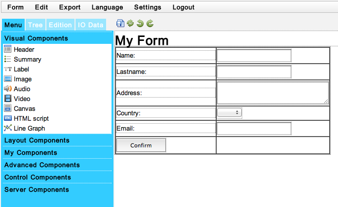
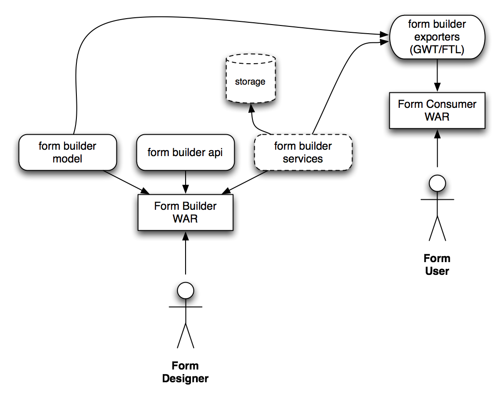

JBPM FORM BUILDER – STATE OF THE ART
Hi there, I want to share with everyone some updates about the jBPM Form Builder. I was doing some work to make it independent of the environment and more easy to use. This post include the current state of the project, how to build it and run it and the future steps. Feel free to leave feedback about the features that you consider most relevant and if you want to get involved please contact me, there is a lot of work to do on this front.
Introduction
The Form Builder was created by Mariano De Maio as a community effort to have an unified and generic way to build forms that can be reused multiple times by our applications. One of the most common use cases are front ends for Human Tasks inside our business processes. The Form Builder right now is a stand alone component built using GWT which now can be deployed in different Application Servers and Servlet Containers and support multiple browsers. The main focus of this component is to allow us to quickly create a form and then provide the mechanisms to render this form inside our applications.

- Example Form
The current version provides the initial version of a configuration service, which allows us to configure where do we want to store our form definitions. This is an important feature to be agnostic of all the other components that we need to deploy, allowing us to just deploy the form builder if we just need to create forms. This simplify the development and configurations efforts required by the users to get started with this component.
Structure
I’ve being working in decouple in the internal functionality in different modules to make it more reusable and accesible from third party application. The following figure shows how the components looks right now:

- Form Builder Components
You can follow the discussions about the design and each module functionality joining the jbpm-dev mailing list.
As you can notice, there are two big things:
- The Form Builder WAR: the application that allows us to model our forms. It can work as an standalone component, you don’t need to deploy any other application to work with it.
- The Form Consumer: any third party application which wants to interact with the real form
In the following section we will see a quick demo about how to model a form and how to consume it from another application.
Example
The following video shows how we can design a form that will be in charge of interacting with a User Task created on the jBPM5 Human Task Server. We will see how we can design, save and then render the resultant form from a different application.

Roadmap
The following steps for the project is to provide a simplified list of components with a default layout and a customizable CSS palette to allow you to customize and adapt the form builder to your own needs. We will be working to integrate the current version to the jBPM Web Process Designer to be able to jump back and forth from the Business Process Design view to the Form Builder.
There are several improvements related to the data mappings and automatic form creations that we are investigating and developing.
I will share soon a list of visual components that we will be providing in a different post, but feel free to send suggestions!
Get Involved
This is a very good time to get involved and share your opinion about this kind of components. The more requirements that we can gather the better the component will be. If you want to learn and contribute in this project please contact me, there are a lot of small tasks to do which will help to improve the usability and flexibility of this component.
You can find the source code of the project here: https://github.com/droolsjbpm/jbpm-form-builder/
Initial Setup: https://community.jboss.org/wiki/FormBuilderSetup
Some task that could be done by community members are:
- Maven profiles for different containers
- Create new components to display in the palette
- Archetype for creating clients
- UI improvements
- Documentation
If you think about another feature that you want to add contact me and we can figure out how to add it.

{kind=link}
{kind=link}